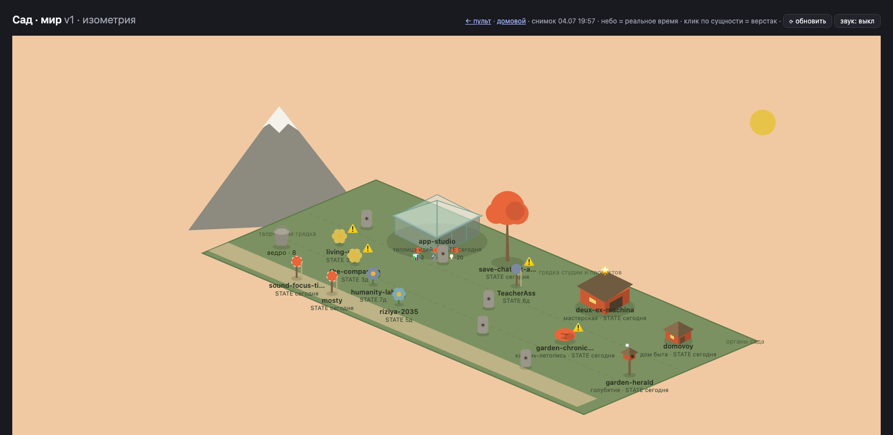
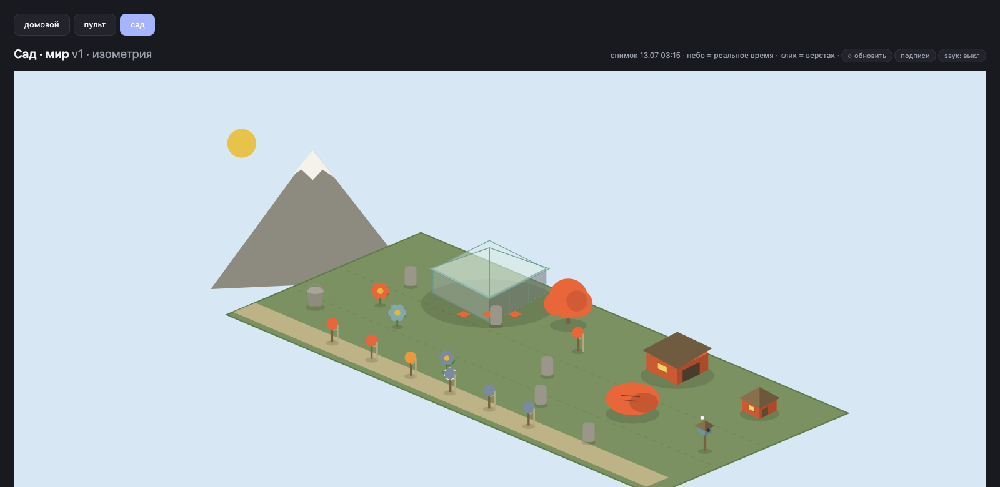
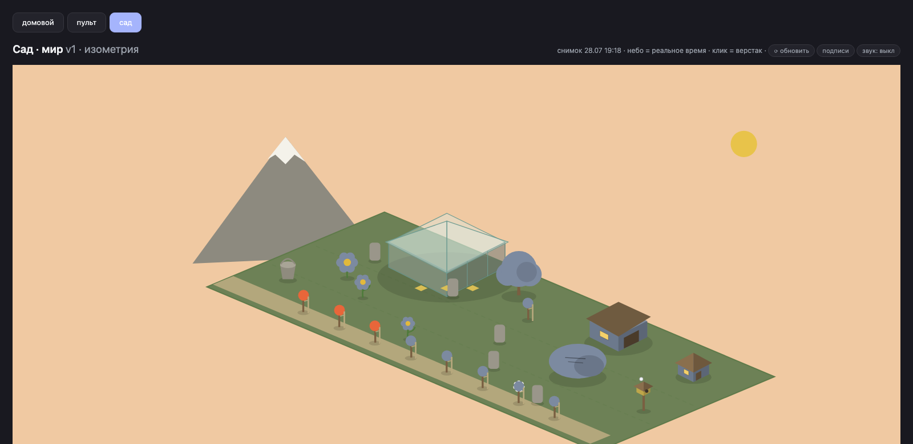
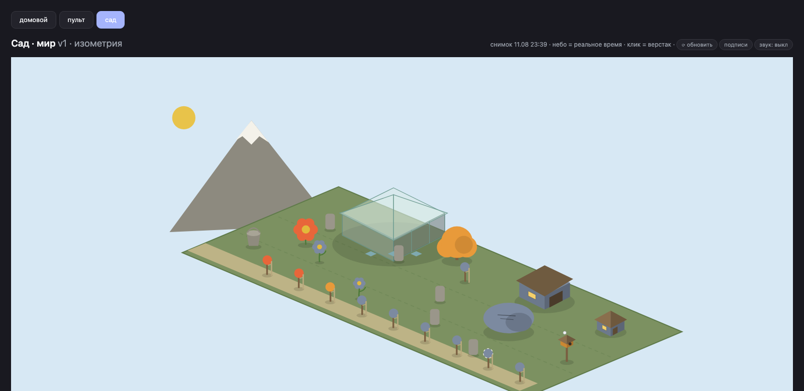

An assistant remembers facts about you between sessions. It does not remember the work — what a project is, where it stands, why it was built this way. Here every project keeps that itself, in three text files.

Ordinary text in the project folder, readable by a person and edited by hand when it is wrong.
Ten steps. Take them at your own pace — the last one closes the circle back to the first.
Right now the longest a project has gone without a closing pass is 47 days. The panel reports the worst case, not the average.




A scheduled job takes one frame every morning at 08:30 — 44 so far, nothing staged for the picture. Project names are left off: several are personal.
The hand-kept census of all projects was dissolved. A script already reads every project's state file directly. The map that duplicated it had fallen six weeks behind and did not know about seven live projects. What survives it is the sign: a rule that says read this, while the code never opens it.
Reversed decisions are now marked in their own heading. A reversal written only as a new entry further down leaves the cancelled rule looking alive. The reader meets the dead rule first and takes it as law. Cheaper than a status field on every entry: only the reversed ones pay.
The closing pass now leaves a timestamp of its own. Before that, overdue was measured from the last file change. Filing a small fact as it settled reset the clock and hid that nothing had been thought through. Two different things had been sharing one signal.
Committing left the closing pass. The two were bundled because both touch files. But one is reflection and the other is safekeeping. Bundled, they force a choice: commit with nothing to say, or skip the reflection to avoid the commit.
Two sessions cannot silently overwrite each other's file. The design assumed the last writer wins, and a rule — one writer per project — was built on top of that fear. A test showed otherwise: a write based on a stale read is refused and the session has to re-read. Both changes survived. The rule stayed as hygiene; it is no longer what prevents loss.
One assistant in different modes, not a population of agents. The obvious answer to a growing set of projects is to staff it. Considered and dropped: the pain was visibility and rhythm. Both come from structure — a state file per project, a fixed entry and a fixed exit.
The first of these files was written in the middle of an ordinary refactor, to stop re-explaining the same project to every new session. Nothing about it was meant as a method.